Alison Booth
Faber, Ernst. Famous Women of China. Shanghai: Society for the Diffusion of Christian and General Knowledge among the Chinese, 1890.
One of a variety of collective biographies of women published in non-anglophone countries under imperial influence. Cf. Williams, Heroines of India , published in London (n.d.).
TOC: Women Made Famous by Imperial Decree: Suicides, Widows, Filial Daughters; Women Made Famous by the Voice of the People: Filial Daughters; Devoted Sisters; Young Ladies; Courtesans; Intriguing Women; Empresses; Good Wives; Bad Wives; Good Mothers; Bad Mothers; Widows; Authoresses; Artists; Artisans; Supernatural Females; Goddesses; Christian Work among Chinese Women.
Search OCLC WorldCat for this title.
Search Google Books for this title.
Facts to Correct Fancies; or, Short Narratives Compiled from the Biography of Remarkable Women. Written for Children, by a Mother. Facts to Correct Fancies London: Harris, 1840. New York: Francis, 1845; 1846. London: Grant & Griffith, [1800s?]. Reprinted as “James Miller,” Short Stories From the Lives of Remarkable Women: Being Narratives of Fact to Correct Fiction, As Related to Her Children. New York: Miller, 1861.
British Library. Interweaves a series of biographies with a tale of childhood like the early books of The Mill on the Floss . Narrated by father.
TOC: Lady Jane Grey; Lady Anna Halket; Lady Arundel; Jane de Mountfort; Madame Dacier; Queen Elizabeth; Liona; Mademoiselle Maille; Mary, Queen of William III; Martha Glar; Mademoiselle Delleglace; Madame Lefort; Madame St. Belmont; Madame St. Nectaire; Helena Lucretia Cornaro; Inez de la Cruz; Countess of Leicester; Joan of Arc; Madame de Mouchy; Mademoiselles de Bussy and de Brion.
See also Pop ChartSearch OCLC WorldCat for this title.
Search Google Books for this title.
Famous Girls. "Famous Girls." darton London: 1870.
Riches; not British Library. or WorldCat. Possibly by John Maw Darton?
Chapter titles: Margaret Roper, Daughter of Sir Thomas More; "Little Miss Burney"; Laura Bridgman; Felicia Hemans; Harriet Martineau; Harriet Beecher Stowe; Elizabeth Le Brun; Madame Guyon; Madame de Stael; The Queen; Princess Charlotte; Miss Frederika Bremer; Margaret, Duchess of Newcastle; Miss Marsh; Caroline Chisholm; Miss Lydia Child; Dowager Duchess of Sutherland; Jenny Lind; Princess of Wales; Princess Louise; Mrs. C. L. Balfour; Baroness Burdett Coutts.
Search OCLC WorldCat for this title.
Search Google Books for this title.
Famous Women of History. Famous Women of History. pinkham [Lynn, MA: Lydia E. Pinkham, 1920s?].
32 pp. Includes testimonials for Pinkham's medicines.
Search OCLC WorldCat for this title.
Search Google Books for this title.
Famous Women of the World. [Monticello, IL: Pepsin Syrup Co.], 1920.
TOC: Martha Dandridge Custis; Marie Antoinette; Queen Victoria; Florence Nightingale; Clara Barton; Rosa Bonheur; Harriet Beecher Stowe; George Eliot; Lucretia Mott; Emma C. Willard; Julia Ward Howe; Mary Baker Eddy; Elizabeth Cady Stanton; Susan B. Anthony; Catharine Breshkovskaya; Jeanette Rankin; Countess Sophie Panin.
See also Pop ChartSearch OCLC WorldCat for this title.
Search Google Books for this title.
Farmer, Lydia Hoyt. The Girls' Book of Famous Queens. New York: Crowell, 1887; 1892; 1915; 1927. London: Harrap, 1927; 1928. Title variant: The/A Book of Famous Queens.
TOC: Semiramis, Queen of Assyria; Dido, Queen of Carthage; Cleopatra, Queen of Egypt; Zenobia, Queen of Palmyra; Matilda of Flanders; Margaret of Anjou; Catharine of Aragon; Queen Elizabeth, and Mary, Queen of Scotts; Queen Catherine de’ Medici; Queen Anne; Maria Theresa, Empress of Austria; Catherine II, Empress of Russia; Queen Maria Antoinette; The Empress Josephine; The Empress Eugenie; Queen Victoria.
See also Pop Chart-
 Lady Jane Grey
Lady Jane Grey -
 Queen Elizabeth I
Queen Elizabeth I -
 Queen Elizabeth I
Queen Elizabeth I -
Queen Elizabeth I
-
 Queen Elizabeth I
Queen Elizabeth I -
 Lady Jane Grey
Lady Jane Grey
Search OCLC WorldCat for this title.
Search Google Books for this title.
Farmer, Lydia Hoyt. ed. The National Exposition Souvenir: What America Owes to Woman. Introduction by Julia Ward Howe. Chicago: Charles Wells Moulton, 1893. Buffalo, NY: n.p., 1893.
Chapter titles: What America Owes to Isabella of Castile and Madame La Fayette; Columbus at Sante Fe; The Women of Plymouth Colony; The Lady Arabella; Puritan Womanhood: A Power in America; The Women of the American Revolution; Autobiographical Sketch; Wives of the Presidents; Wives and Daughters in the Home; Domestic Science in American Homes; Clergymen’s Wives; The Wives of Army Officers; The American Salon; Social Leaders of Washington; The Southern Women, Past and Present; Physical Culture of American Women; The American Girl, Past and Present; Every-day Women; Farmers’ Wives and Daughters; Women in Literature and Poetry; Women Fiction Writers of America; Women Journalists in America; Women in Education and Science; Kindergartens; Women as Teachers; Massachusetts Normal Schools; Wellesly College Towards Liberal Education; An American Queen; Sketch of Maria Mitchell; Women’s Work at the Harvard Observatory; Women’s Progress; The Work of Women During the War; Women’s Work for Indians; The Woman’s Club Movement; The Influence of Women in American Politics; Woman’s Work in the Church; Working Girls’ Clubs; Woman’s National Christian Temperance Union; Young Women’s Christian Temperance Work; Hospitals, Mission Schools, and Other Charities; Sketch of Dorothea Lynde Dix; Two Women I have known; Women in Medicine; Women in Law; American Women of the Drama; Women in Business and Trade; Queens of the Shop, the Workroom and the Tenement; Women Clerks in New York; Women in Art and Music; Women Artists; Women Art Patrons; Address at the Dedicatory Ceremonies; Ode: Columbia’s Banner; The Board of Lady Managers; The Woman’s Branch of the World’s Congress Auxillary; The Woman’s Building; The Children’s Building; Exhibits by Women.
Multiple female contributors, including Lucy Larcom, Mrs. Ulysses S. Grant, Linda T. Guilford. “Some Women in American History”: Isabella of Castile and Madame de Lafayette. Some collective-anonymous chapters: “The Women of Plymouth Colony”; “Puritan Womanhood: A Power in America”; “Women in the Home”; “Women in Literature”; “Women in Education and Science”; “Women in Philanthropy, Church Work, Home Missions, and Charities”; "Women in Professions, Business, and Trade." Like Eagle, The Congress of Women (1894), a record associated with World's Columbian Exposition in Chicago.
-
 Martha Washington
Martha Washington -
 Mrs. Julia Ward Howe
Mrs. Julia Ward Howe -
 Mrs. Lydia Hoyt Farmer
Mrs. Lydia Hoyt Farmer -
Mrs. Jane G. Austin
-
Mrs. Lucy Larcom
-
 Mrs. Elroy M. Avery
Mrs. Elroy M. Avery -
 Mrs. Ulysses S. Grant
Mrs. Ulysses S. Grant -
 Mrs. Rutherford B. Hayes
Mrs. Rutherford B. Hayes -
 Mrs. Benjamin Harrison
Mrs. Benjamin Harrison -
Mrs. Grover Cleveland
-
 Mrs. Anges Bailey Ormsbee
Mrs. Anges Bailey Ormsbee -
Mrs. Henry Ward Beecher
-
 Mrs. Jessie Benton Fremont
Mrs. Jessie Benton Fremont -
Mrs. Dorothy Todd Madison
-
 Mrs. Frank Leslie
Mrs. Frank Leslie -
Mrs. Annie Jenness Miller
-
 Miss Jennie E. Hooker
Miss Jennie E. Hooker -
 Mrs. Mary Mapes Dodge
Mrs. Mary Mapes Dodge -
 Mrs. John A. Logan
Mrs. John A. Logan -
Mrs. Harriet M. Lothrop
-
Mrs. Ellen Olney Kirk
-
Miss Susan E. Dickinson
-
Miss Eliza Hardy Lord
-
 Miss Anne Eugenia Morgan
Miss Anne Eugenia Morgan -
 Mrs. Frances Fisher Wood
Mrs. Frances Fisher Wood -
 Mrs. Frances E. Willard
Mrs. Frances E. Willard -
Mrs. Mary A. Livermore
-
Mrs. Amelia Stone Quinton
-
 Mrs. J. C. Croly
Mrs. J. C. Croly -
Mrs. J. Ellen Foster
-
 Mrs. Frances J. Barnes
Mrs. Frances J. Barnes -
 Miss L. Elizabeth Price
Miss L. Elizabeth Price -
 Mrs. Charles Henrotin
Mrs. Charles Henrotin -
 Mrs. Ada M. Bittenbender
Mrs. Ada M. Bittenbender -
Miss Lillian Whiting
-
 Mrs. Mathilda B. Carse
Mrs. Mathilda B. Carse -
Marquise Clara Lanza
-
 Miss Helen Evertson Smith
Miss Helen Evertson Smith -
 Mrs. Potter Palmer
Mrs. Potter Palmer
Search OCLC WorldCat for this title.
Search Google Books for this title.
Farningham, Marianne [Mary Anne Hearne —]. Women and Their Work: Wives and Daughters of the Old Testament. London: Clarke, 1906.
Bodleian
Search OCLC WorldCat for this title.
Search Google Books for this title.
Farrance, E. H. Twelve Wonderful Women: The Romance of Their Life and Work. London: Pickering & Inglis, 1936; 1948.
TOC: Florence Nightingale; Frances Ridley Havergal; Agnes Weston, the sailors' friend; Fanny Jane Crosby; Mrs. Judson of Burma; Pandita Ramabai; Mrs. Walter Searle; Harriet Beecher Stowe; Mary Slessor; Elizabeth Fry; Charlotte Maria Tucker; Grace Darling.
Twelve persons series.
See also Pop ChartSearch OCLC WorldCat for this title.
Search Google Books for this title.
Faulhaber, Cardinal Michael von. Women of the Bible. London: Coldwell ; Westminster, MD: Newman, 1938; 1955.
Search OCLC WorldCat for this title.
Search Google Books for this title.
Fawcett, Millicent Garrett, Dame. Five Famous French Women. 1905. London and New York: Cassell, 1907.
TOC: Joan of Arc; Louise of Savoy and Her Daughter, Margaret of Angoulême, Dutchess of Alençon and Queen of Navarre; Jeanne D'Albret, Queen of Navarre; Renée of France, Duchess of Ferrara.
See also Pop Chart-
Margaret of Angouleme
-
 Louise
Louise -
Catherine de Medici
-
Mary Queen of Scots
-
 Jeanne D'Albret
Jeanne D'Albret -
Renee of France
-
Elizabeth
Search OCLC WorldCat for this title.
Search Google Books for this title.
Fawcett, Millicent Garrett, Dame.[Mrs. Henry —] Some Eminent Women of Our Times: Short Biographical Sketches. London, New York, and Edinburgh: Macmillan, 1889; 1894.
TOC: Elizabeth Fry; Mary Carpenter; Caroline Herschel; Sarah Martin; Mary Somerville; Queen Victoria; Harriet Martineau; Florence Nightingale; Mary Lamb; Agnes Elizabeth Jones; Charlotte and Emily Brontë; Elizabeth Barrett Browning; Lady Sale and Her Fellow-Hostages in Afghanistan; Elizabeth Gilbert; Jane Austen; Maria Edgeworth; Queen Louisa of Prussia; Dorothy Wordsworth; Sister Dora; Mrs. Barbauld; Joanna Baillie; Hannah More; The American Abolitionists: Prudence Crandall and Lucretia Mott.
British Library.
Preface dated London 1889: "Written for The Mothers' Companion" in monthly installments 1887-1888; reprinted with permission of Messrs. Partridge, in chronological order of first publication (v-vi). "The sketches were intended chiefly for working women and young people; it was hoped it would be an encouragement to them to be reminded how much good work had been done in various ways by women." Fawcett notes "that nearly all the best contributions of women to literature have been made during the last hundred years...there has been an equally remarkable activity in the spheres of work held to be peculiarly feminine. So far, therefore, from greater freedom and better education encouraging women to neglect womanly work, it has caused them to apply themselves to it more systematically and more successfully. The names of Elizabeth Fry, Mary Carpenter, Sarah Martin, Agnes Jones, Florence Nightingale, and Sister Dora are a proof of this. I believe that we owe their achievements to the same impulse which in another kind of excellence has given us Jane Austen, Charlotte Bronte, and Elizabeth Browning" (v).
See How To Make It as a Woman, 142. See also Pop Chart
Search OCLC WorldCat for this title.
Search Google Books for this title.
Fea, Allan. Some Beauties of the Seventeenth Century. With 82 Illustrations. 2d ed., Some Beauties of the Seventeenth Century London: Methuen, 1906; 1907.
TOC: The Duchess of Mazarin; Henrietta, Duchess of Orleans; The Duchess of Somerset; The Duchess of Portsmouth; The Duchess of Richmond; The Countesses of Falmouth and Rochester; Lucy Walter; Mary of Modena; The Countess of Castlemaine; The Countess de Gramont; Nell Gwyn; The Countess of Shrewsbury; Anne Temple, Frances Jennings, and Goditha Price; The Beautiful Myddeltons; The Countesses of Chesterfield and Southes; The Misses Brooke, Miss Fraser, and Miss Lawson; Mademoiselle de La Vallière, and the Marchioness de Montespan.
-
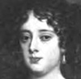Louise de Keroualle
-
 Hortense Mancini
Hortense Mancini -
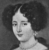Marie Mancini
-
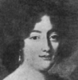Hortense Mancini
-
 Henrietta
Henrietta -
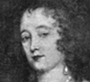Anne Villiers
-
 Henrietta
Henrietta -
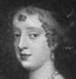Elizabeth Wriothesley
-
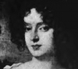Elizabeth Wriothesley
-
Elizabeth Percy
-
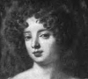Louise de Keroualle
-
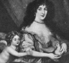Louise de Keroualle
-
 Frances Stuart
Frances Stuart -
 Frances Stuart
Frances Stuart -
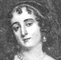Mary Bagot
-
 Henrietta Boyle
Henrietta Boyle -
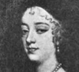Henrietta Boyle
-
 Lucy Walter
Lucy Walter -
 Mary Beatrice D'Este
Mary Beatrice D'Este -
 Anne Digby
Anne Digby -
Barbara Villiers
-
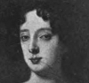Barbara Villiers
-
 Barbara Villiers
Barbara Villiers -
 Barbara Villiers
Barbara Villiers -
 Elizabeth Hamilton
Elizabeth Hamilton -
 Elizabeth Hamilton
Elizabeth Hamilton -
 Nell Gwyn
Nell Gwyn -
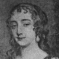Nell Gwyn
-
 Anna Maria Bruden
Anna Maria Bruden -
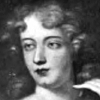Frances Jennings
-
 Frances Jennings
Frances Jennings -
 Jane Myddleton
Jane Myddleton -
 Mrs. Myddleton
Mrs. Myddleton -
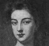Jane Myddleton
-
 Frances Whitmore
Frances Whitmore -
 Mrs. Langley
Mrs. Langley -
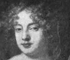Mary Cholmondeley
-
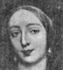Elizabeth Butler
-
 Margaret Brooke
Margaret Brooke -
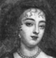Frances Brooke
-
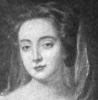Miss Lawson
-
 Carey Fraser
Carey Fraser
Search OCLC WorldCat for this title.
Search Google Books for this title.
Felton, Rebecca Latimer. The Romantic Story of Georgia's Women. As Told to Carter Brooke Jones in the Atlanta Georgian. The Romantic Story of Georgia's Women [Atlanta]: Atlanta Georgian and Sunday American, 1930.
Search OCLC WorldCat for this title.
Search Google Books for this title.
Ferris, George. Great Singers. Series I & II. New York: Appleton, 1879; 1880-1881; 1882; 1888; 1889; 1892; 1893; 1894; 1895; 1897; 1907. Freeport, New York: Books for Libraries, 1972.
TOC: Faustina Bordoni; Catarina Gabrielli; Sophie Arnould; Elizabeth Billington and her contemporaries; Angelica Catalani; Giuditta Pasta; Maria Felicia Malibran; Wilhelmina Schröder-Devrient; Giulia Grisi; Pauline Viardot; Fanny Persiani; Marietta Alboni; Jenny Lind; Sophie Cruvelli; Henrietta Sontag.
See also Pop ChartSearch OCLC WorldCat for this title.
Search Google Books for this title.
Ferris, Helen Josephine, and Virginia Moore. Girls Who Did: Stories of Real Girls and Their Careers. Illustrated by Harriet Moncure. New York: Dutton, 1927; 1933; 1937.
TOC: Gertrude Hawley; Marion Durell; Anne Carroll Moore; Ethel Barrymore; Mabel E. Stewart; Ines Haynes Irwin; Mina Hall Carothers; Neysa McMein; Charlotte Cowdry Brown; Edna Watson Bailey; Marion Sprague Gilmore; Peggy Hoyt; Jean Norris; Clara Sipprell; Margaret E. Malthy; Brenda Putnam; Alice Foote MacDougail; Mary Kingsbury Simkhovitch; Maria Jeritza.
Inez Haynes Irwin is the author of Angels and Amazons (1933).
See also Pop ChartSearch OCLC WorldCat for this title.
Search Google Books for this title.
Ferris, Helen Josephine. This Happened to Me: Stories of Real Girls. New York: Dutton, 1929; 1938; 1942.
Children's writer; author of Girl Scout stories.
Search OCLC WorldCat for this title.
Search Google Books for this title.
Ferris, Helen Josephine. When I Was a Girl: The Stories of Five Famous Women, as Told by Themselves. New York: Macmillan/Junior Literary Guild, 1930; 1931; 1938; 1943.
TOC: Ernestine Schumann Heink; Janet Scudder; Marie Curie; Jane Addams; Etsu Inagaki Sugimoto.
Note comparable collection with different contents.
See also Pop ChartSearch OCLC WorldCat for this title.
Search Google Books for this title.
Ferris, Helen Josephine. Five Girls Who Dared: The Girlhood Stories of Five Courageous Girls as Told by Themselves. New York: Macmillan, 1930; 1931.
TOC: Amelia Earhart; Louise de Koven Bowen; Josephine De Mott Robinson; Elisabeth Marbury; Marine, Grand Duchess of Russia.
See also Pop ChartSearch OCLC WorldCat for this title.
Search Google Books for this title.
Festing, Gabrielle. On the Distaff Side: Portraits of Four Great Ladies. London: Nisbet; New York: Pott, 1903.
TOC: Elizabeth Seymour, Duchess of Somerset; Elizabeth Talbot, Countess of Shrewsbury; Elizabeth Montagu, Duchess of Montagu; Sophia Eleanora Amelia, Princess.
Search OCLC WorldCat for this title.
Search Google Books for this title.
Festing, Gabrielle. Unstoried in History: Portraits of Some Famous Women of the 16th, 17th, and 18th Centuries. London: Nisbet, 1901.
TOC: Lady Bridget Manners; Brilliana Conway; Blanche Somerset; The Lady Mary Bertie; Thomas Pitt , Jane Innes; Ellenor Frere.
Chapter titles: Preface; Introduction; A Mother and Daughter: Elizabeth, Countess of Rutland, Lady Bridget Manners (Lady Bridget Tyrwhitt); A Faithful Wife: Brilliana Conway (Lady Harley); Some Beleaguered Ladies: Blanche Somerset (Lady Arundell of Wardour), Anne Coventry (Lady Savile), Mary Hawtrey (Lady Bankes), Elizabeth Fitzgerald; A Group from the Restoration: The Marquis and Marchioness of Worcester, The Lady Grace Manners (Lady Chaworth), The Lady Mary Bertie, The Hon. Bridget Noel; An Ill-Matched Couple: Thomas Pitt , Jane Innes (Mrs. Pitt); A Spinster and a Lady Bountiful of the Eighteenth Century: Ellenor Frere (1713-1801), Ellenor Frere (Lady Fenn, 1744-1813); Conclusion.
Search OCLC WorldCat for this title.
Search Google Books for this title.
Fielding, William John. Woman — The Warrior: Amazons Have Had Their Counterparts in Every Age. Girard, KS: Haldeman-Julius, 1928.
Search OCLC WorldCat for this title.
Search Google Books for this title.
Fifty Famous Women and the Lessons of Their Lives: Illustrated with Numerous Wood Engravings. London: Ward, Lock, [1850?]. London and New York: Ward, Lock, [1879], [1881]. Title variant: Fifty Famous Women, Their Virtues and Failings and the Lessons of Their Lives. Illustrated. London: Ward, Lock, & Tyler, 1864; 1876.
TOC: Madame de Lavalette; Lady Rachel Russell; the Empress Josephine; Margaret of Anjou; Esther Johnson [Stella]; Margaret Roper; Lady Jane Grey; the Empress Maude; Charlotte Corday; Anne Askew; Lady Arabella Stuart; Christina of Sweden; Sarah, Duchess of Marlborough; Lucy Hutchinson; Madame Roland; Grace Darling; Madame D'Arblay [Burney]; Madame de Stael; Mrs. Chisholm; Poccahontas [sic]; Madame de Maintenon; Ida Pfeiffer; Mary Queen of Scots; Maria Theresa; Queen Louisa of Prussia; Queen Catherine Parr; Elizabeth the Holy Maid of Kent; Dame Eleanor Davies; Lady Norton; Elizabeth Burnet; Mary II [Queen of William III]; Joan of Arc; Isabella of Castille; Marie Antoinette; Charlotte Brontë; Marie de Medicis; Henrietta Maria; Joan of Navarre; Mrs. Fry; Mrs. Hemans; Mrs. Unwin; Frederika Bremer; Queen Chlothilda[sic]; Queen Elizabeth; Anne Boleyn; Queen Anne; Catherine of Arragon; Mrs. Elizabeth Carter; Lady Pakington; Anne Countess of Winchelsea.
Contents of [1881] edition (University of Western Ontario copy), the first sixteen names identical to above, but varying after Madame D'Arblay with some of the same figures amid new names.
TOC: Madame de Lavalette; Lady Rachel Russell; the Empress Josephine; Margaret of Anjou; Esther Johnson [Stella]; Margaret Roper; Lady Jane Grey; the Empress Maude; Charlotte Corday; Anne Askew; Lady Arabella Stuart; Christina of Sweden; Sarah, Duchess of Marlborough; Lucy Hutchinson; Madame Roland; Grace Darling; Madame D'Arblay [Burney]; Matilda, Countess of Tuscany; Madame de Stael; Mrs. Chisholm; Poccahontas [sic]; Madame de Maintenon; Ida Pfeiffer; Princess de Lamballe; Louisa Queen of Prussia; Queen Catherine Parr; Mrs. Somerville; Sarah Margaret Fuller; Elizabeth Burnet; Mary II [Queen of William III]; Joan of Arc; Isabella of Castille; Marie Antoinette; Charlotte Bronte; Lady Anne Barnard; Marie de Medicis; Henrietta Maria; Joan of Navarre; Mrs. Fry; Queen Elizabeth; Mary Queen of Scots; Lady Hester Stanhope; Elizabeth of Hungary; Georgiana, Duchess of Devonshire; Anne Boleyn; Queen Anne; Carolina, Baroness Nairne; Mrs. Elizabeth Carter; Mrs. Siddons.
See Robertson 1936.
-
Charlotte Corday
-
Anne Askew
-
Lady Arabella Stuart
-
 Christina of Sweden
Christina of Sweden -
Duchess of Marlborough
-
 Lucy Hutchinson
Lucy Hutchinson -
 Madame Roland
Madame Roland -
 Grace Darling
Grace Darling -
Madame D’Arblay
-
Frances Burney
-
 Madame de Staël
Madame de Staël -
 Mrs. Chisholm
Mrs. Chisholm -
 Pocahontas
Pocahontas -
 Pocahontas Interceding
Pocahontas Interceding -
 Madame de Maintenon
Madame de Maintenon -
 Ida Pfeiffer
Ida Pfeiffer -
Maria Theresa
-
 Louisa, Queen of Prussia
Louisa, Queen of Prussia -
 Catherine Parr before Henry VIII
Catherine Parr before Henry VIII -
 Joan D’Arc
Joan D’Arc -
 Isabella of Castile
Isabella of Castile -
Marie Antoinette
-
 Marie Antoinette at the Guillotine
Marie Antoinette at the Guillotine -
Charlotte Brontë
-
 Marie de Medicis
Marie de Medicis -
 Henrietta Maria
Henrietta Maria -
Elizabeth Fry
-
 Elizabeth Fry
Elizabeth Fry -
Mary, Queen of Scots
-
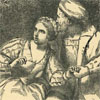Meeting of Henry VIII and Anne Boleyn
-
Anne Boleyn
Search OCLC WorldCat for this title.
Search Google Books for this title.
Finch, Barbara Clay. Lives of the Princesses of Wales. 3 vols., London: Remington, 1883.
TOC: vol I: Joan of Kent; Anne of Warwick; Katharine of Aragon. vol. II: Katharine of Aragon. Cont'd; Caroline of Anspach; Augusta of Saxe-Gotha. vol. III: Augusta of Saxe-Gotha. Cont'd; Caroline of Brunswick.
Search OCLC WorldCat for this title.
Search Google Books for this title.
Finden, W[illiam]. Beauties of Byron; or, Portraits of the Principal Female Characters in Lord Byron's Poems. Engraved from original paintings by eminent artists. With extracts illustrating each subject. Beauties of Byron; or, Portraits of the Principal London: Tilt; Philadelphia: Wardle, 1836; 1850. London: Tilt, 1865.
NOT:=literary heroines. See Appleton's Portrait Gallery of Women.The 1836 edition has a variant title: Les dames de Byron; or, Portraits of the principal female characters in Lord Byron's poems. Engraved from original paintings by eminent artists. Under the superintendence of W. and E. Finden .
Search OCLC WorldCat for this title.
Search Google Books for this title.
Finden, W[illiam]. Gallery of the Graces: A Series of Portrait Illustrations of British Poets. From paintings designed expressly for this work by the most eminent British artists. London: Tilt, 1837; David Boquet [1830s?].
NOT:=literary heroines. Corresponds with Jerrold, Lady Blessington, Burke, and Jameson. "Gallery" is a literal and figurative premise for at least twenty collections in this bibliography
Chapter titles: Quiet Like a Nun; A Thing to Bless; When to the Session of Sweet Silent Thoughts; With Eyes Bright in the Lustre; They That My Trust Must Grow; On Thy Sweet Brow Is Sorrow; Some Please Page Shall Charm; A Creature Not Too Bright or Good; That Piece of Song, That Old and Antique Song; The Young Olympia; The Widow; The May Queen; The Ladye Adeline; Medora; Aurora; The Fair Patrician; Nature's Favorite; Eleanore; Genevieve; Ruth; The Maid of Lismore; The Spirit of Norman Abbey; Erinna; Caroline; The Gondola; The Pleasing Thought; Isabel; The Shade of Sadness; The Passion Flower; The Wild Flower; Gertude of Wyoming; Margarita; Edderline; The Gleaner; The Dreamer; Emily.
-
Matilda
-
Julia
-
 Marianne
Marianne -
 The Nun
The Nun -
Helena
-
 The Gentle Student
The Gentle Student -
 Sophy
Sophy -
 Cecilia
Cecilia -
The Young Olympia
-
The Widow
-
 The May Queen
The May Queen -
The Ladye Adeline
-
 Medora
Medora -
Aurora
-
The Fair Patrician
-
 Nature's Favourite
Nature's Favourite -
Eleanore
-
Genevieve
-
Ruth
-
 The Maid of Lismore
The Maid of Lismore -
 The Spirit of Norman Abbey
The Spirit of Norman Abbey -
 Erinna
Erinna -
Caroline
-
The Gondola
-
The Pleasing Thought
-
Isabel
-
The Shade of Sadness
-
The Passion Flower
-
The Wild Flower
-
 Gertrude
Gertrude -
Margarita
-
Edderline
-
 The Gleaner
The Gleaner -
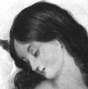The Dreamer
-
 Emily
Emily
Search OCLC WorldCat for this title.
Search Google Books for this title.
Finden, W[illiam], [and Edward Francis Finden]. Portraits of the Female Aristocracy of the Court of Queen Victoria. London: Hogarth, [1839]; n.p., [1842]. Reprint, 2 vols., [1849]. Probable alternative title for: 1. Fowler, William Worthington. The Book of the Boudoir; or, The Court of Queen Victoria. A series of highly-finished portraits of the British nobility, from original paintings by eminent artists, engraved under the superintendence of W. and E. Finden. With poetical illustrations. London: Tilt; Philadelphia: Carey & Hart, [1840s].
Publication dates, from 1839 to 1849, are unspecified.
Search OCLC WorldCat for this title.
Search Google Books for this title.
Findlay, Jessie Patrick. Spindle Side of Scottish Song. London: Dent; New York: Dutton, 1902.
TOC: The Songstress in Exile:Lady Grisell Hume; The Songstress in Social Life: Mrs. Alison Cockburn; The Songstress of Flodden Field: Miss Jean Elliot; The Songstress of Sentiment: Miss Susanna Blamire; Singers of Heather and Hearth:Jean Glover and Elizabeth Hamilton; The Songstress Incognita:Lady Anne Lindsay; The Queen of Songstresses:Carolina, Baroness Nairne; The Blue-Stocking Songstress: Miss Joanna Baillie; The Singer of the Swan-Song of the Spindle-Side: Janet Hamilton.
Search OCLC WorldCat for this title.
Search Google Books for this title.
Fittis, Robert Scott. Heroines of Scotland. London: Paisley/Gardner, 1889; 1899.
TOC: Isobel, Countess of Buchan; Black Agnes of Dunbar; Margaret Keith, Lady Lyndsay; Queen Margaret Logie, & Lady Margaret Drummond; Janet Douglas; Lady Glammis; Lilliard of Ancrum; Fair Helen of Ardoch; The Ladies Ogilvie of Airlie; Bessie Bell & Mary Gray; Anne Keith, Lady Methven; Isobel Alison of Perth & Marion Harvie of Bo'ness; Lady Sophia Lindsay.
Search OCLC WorldCat for this title.
Search Google Books for this title.
Forrest, Mary. [Julia Deane Freeman]. The Women of the South Distinguished in Literature: Biographical sketches of women writers of the first half of the 19th century, supplemented with selections from their writings. The Women of the South Distinguished in Literature New York: Derby & Jackson, 1860; 1861; Richardson, 1865; 1866. London: Richardson, 1866.
Julia Deane Freeman a poet.
TOC: Octavia Walton le Vert; Caroline Gilman; Caroline Howard; Anna Cora Mowatt Ritchie; Catharine Anne Warfield; Eleanor Percy Lee; Maria J. McIntosh; Almira Lincoln Phelps; Marion Harland; Emma D. E. N. Southworth; Rosa Vertner Johnson; Caroline Lee Hentz; Sally Rochester Ford; Susan Archer Talley; Augusta J. Evans; Jane T. H. Cross; Mary S. B. Dana Shindler; Anna Eliza Dupuy; Amelia B. Welby; Kate A. Du Bose; A. R. Blount and C. B. Sinclair; Lizzie Petit; Sallie Ada Reedy; L. Virginia French; Mary E. Bryan; Anna Peyre Dinnies; Louisa S. McCord; Mary Elizabeth Lee; Georgiana A. Hulse McLeod; Mary J. Windle; Jane T. Worthington; R. Jacobus; Essie B. Cheesborough; Emelie C. S. Chilton.
Search OCLC WorldCat for this title.
Search Google Books for this title.
Forsyth, James S. The Women of the Bible: A Series of Biographies. London: Robert Banks, 1896.
Search OCLC WorldCat for this title.
Search Google Books for this title.
Foster, Mary Dillon. Who's Who Among Minnesota Women. A History of Woman's Work in Minnesota from Pioneer Days to Date. Who's Who Among Minnesota Women. A History of Women's Work [Saint Paul, MN]: Foster, 1924.
Search OCLC WorldCat for this title.
Search Google Books for this title.
Foster, Warren Dunham, ed. Heroines of Modern Religion. New York: Sturgis & Walton; Macmillan, 1913;
TOC: Anne Hutchinson; Susannah Wesley; Elizabeth Ann Seton; Lucretia Mott; Fanny Crosby; Sister Dora; Hannah Whitall Smith; Frances Ridley Havergal; Ramabai Dongre Medhavi; Maud Ballington Booth.
Chapter titles: Anne Hutchinson, by A.E. Jenkins; Susannah Wesley, by W.H. Foster; Elizabeth Ann Seton, by R.V. Trevel; Lucretia Mott, by A.E. Jenkins; Fanny Crosby, by W. Bradbury; Sister Dora, by G.L. Mumford; Hannah Whitall Smith, by W.H. Foster; Frances Ridley Havergal, by W. Bradbury; Ramabai Dongre Medhavi, by J.C. Minot; Maud Ballington Booth, by R.V. Trevel; Part of "Modern Heroines Series," ed. Foster (b. 1886). See companion collection Heroines of Modern Progress by Adams and Foster. Available microfiche. Rpt. Freeport, NY: Books for Libraries, 1970.
See also Pop ChartSearch OCLC WorldCat for this title.
Search Google Books for this title.
Fowler, William Worthington. Woman on the American Frontier: A Valuable and Authentic History of the Heroism, Adventures, Privations, Captivities, Trials, and Noble Lives and Deaths of the “Pioneer Mothers of the Republic”. . Title variants (overlapping publication data): Frontier Women: An Authentic History of the Heroism, Adventures, Privations, Captivities, Trials, and Noble Lives and Deaths of the "Pioneer Mothers of Our American Frontier". Or Pioneer Women of Mothers of the Republic. Hartford, CT: Scranton, 1876; 1877; 1878; 1879; 1880; 1882; 1881; 1883; 1886; 1891; 1896. Chicago: Beach; Stamford, CT: Longmeadow, 1877. Syracuse, NY: Gill, 1881. San Francisco: Bancroft, 1884.
Note that various titles have identical or very similar publication histories, and compare those by John Frost between 1854-1869. Various editions widely available, with several reprints in the 1990s.
TOC: Woman as Pioneer; Woman’s Work in Floods and Storms; Early Pioneers: Woman’s Adventures and Heroism; On the Indian Trail; Captive Scouts: Heroines of the Mohawk Valley; Patriot Women of the Revolution; Going West: Perils by the Way; Home Life in the Backwoods; Some Remarkable Women; A Romance of the Border; Pathetic Scenes of Pioneer Life; The Heroines of the South West; Woman’s Experience on the Northern Border; Encounters with Wild Beasts: Courage and Daring; Across the Continet: On the Plains; Woman as a Missionary to the Indians; Woman in the Army; Across the Rocky Mountains; The Comforter and the Guardian; Woman as an Educator on the Frontier.
Search OCLC WorldCat for this title.
Search Google Books for this title.
Freeland, Mariet Hardy. Missionary Martyrs: Mary Louisa Ranf, Missionary to India. By Mrs. Mariet Hardy Freeland...A Sketch of the Life of Mary E. Carpenter, Missionary to Africa. By “One Who Loved Her”...Also Sketches of the Lives of Mary E. North [etc.] Missionaries to Africa. Chicago: Arnold, 1892.
Search OCLC WorldCat for this title.
Search Google Books for this title.
Frichet, Henry, and A.F. Niemoeller. Fleshpots of Antiquity: The Lives and Loves of Ancient Courtesans. New York: Panurge, 1934. Girard, KS: Haldeman-Julius, 1947.
Search OCLC WorldCat for this title.
Search Google Books for this title.
Frost, John. Heroic Women of the West: Comprising Thrilling Examples of Courage, Fortitude, Devotedness, and Self-Sacrifice, among the Pioneer Mothers of the Western Country. Philadelphia: Hart, 1854. Title variants: Daring and Heroic Deeds of American Women: Comprising Thrilling Examples of Courage, Fortitude, Devotedness, and Self-Sacrifice among the Pioneer Mothers of the Western Country. Philadelphia: Evans, 1859; 1860. Or Daring and Heroic Deeds of American Women. Comprising Thrilling Examples > of Courage, Fortitude, Devotedness, and Self-Sacrifice. Boston Lee & Shepard, 1869
The 1869 edition is registered by G. G. Evans in 1859 in Pennsylvania. Its first page and running headers read: “Heroic Women of the West.” Compare title variations of this collection with those by Fowler from 1876 on. Frost [1800-1859], “LL.D.,” prolific writer of histories.
Chapter titles: Woman as Pioneer; Woman’s Work in Floods and Storms; Early Pioneers: Woman’s Adventures and Heroism; On the Indian Trail; Captive Scouts: Heroines of the Mohawk Valley; Patriot Women of the Revolution; Going West: Perils by the Way; Home Life in the Backwoods; Some Remarkable Women; A Romance of the Border; Pathetic Scenes of Pioneer Life; The Heroines of the South West; Woman’s Experience on the Northern Border; Encounters with Wild Beasts: Courage and Daring; Across the Continet: On the Plains; Woman as a Missionary to the Indians; Woman in the Army; Across the Rocky Mountains; The Comforter and the Guardian; Woman as an Educator on the Frontier.
Search OCLC WorldCat for this title.
Search Google Books for this title.
Furniss, Harry. Some Victorian Women: Good, Bad, and Indifferent. London: Lane; New York: Dodd, Mead, 1923.
Compare title of Dark, 1932. Author of Some Victorian Men (London: Lane, 1924); illustrator of Dickens, Thackeray; caricaturist. Generic chapters, e.g. “Some Women Who Wrote,” “A Word About Some Old Women”; no index. The List of Illustrations names: Mrs. Langtry; Lady Wilde; Florence Marryat; Ouida; Lucas Malet; Mrs. Humphry Ward; John Oliver Hobbes; Mrs. Oliphant; Mary Mapes Dodge; Mrs. Rousby; Lydia Thompson; Genevieve Ward; Mme. Vestris; Ada Cavendish; Miss Litton; Harriet Coveney; Violet Cameron; Miss Fortescue; Kate Vaughan; Mary Anderson; Mrs. Brown Potter; Lady Tree; Ellen Terry; Miss Lucy Kemp-Welch; Lady Alma Tadema; Mrs. Jopling Rowe; Kate Greenaway; Alice Havers; Lady Butler. Personal observations or anecdotes primarily of actresses and writers.
Search OCLC WorldCat for this title.
Search Google Books for this title.
Fyvie, John. Comedy Queens of the Georgian Era. London: Constable, 1906. New York: Dutton, 1907.
Fyvie also wrote Noble Dames and Notable Men of the Georgian Era (London: Constable, 1910). Its subjects include Lady Mary Coke, the Countess of Strathmore, and Elizabeth, Lady Holland.
TOC: Lavinia Fenton; Charlotte Charke; Catherine Clive; Margaret Woffington; George Anne Bellamy; Frances Abington; Sophia Baddeley; Elizabeth Farren; Mary Robinson; Mary Sumbel; Dora Jordan; Harriot Mellon.
Chapter titles: Lavinia Fenton, Duchess of Bolton (1708-1760); Charlotte Charke (1710-1760); Catherine Clive (1711-1785); Margaret Woffington (1720-1760); George Anne Bellamy (1731-1788); Frances Abington (1737-1815); Sophia Baddeley (1742-1780); Elizabeth Farren, Countess of Derby (1759?-1829); Mary Robinson, ‘Perdita’ (1758-1800); Mary Sumbel, ‘Becky’ Wells (1759-1826?); Dora Jordan (1762-1816); Harriot Mellon, Duchess of St. Albans (1777?-1837).
Author of Some Literary Eccentrics (New York : J. Pott, 1906); Noble Dames and Notable Men of the Georgian Era (London: Constable, 1910; New York: Lane, 1910); Wits, Beaux, and Beauties of the Georgian Era (London, New York: Lane, 1909).
-
 Margaret Wiffington
Margaret Wiffington -
Frances Abington
-
Sophia Baddeloy
-
 Elizabeth Ferron
Elizabeth Ferron -
Mary Lumbel
-
 Dora Jordan
Dora Jordan -
 Harriot Mellon
Harriot Mellon
Search OCLC WorldCat for this title.
Search Google Books for this title.
Fyvie, John. Some Famous Women of Wit and Beauty: A Georgian Galaxy. New York: Pott; London: Constable, 1905.
TOC: Mrs. Fitzherbert; Lady Hamilton; Mrs. Montagu; Lady Blessington; Mrs. Lennox; Mrs. Grote; The Hon. Mrs. Norton; Lady Eastlake.
Chapter titles: The Unacknowledged Wife of George IV (Mrs. Fitzherbert); Nelson's Lady Hamilton; The Queen of the ‘Blue-stockings’ (Mrs. Montagu); ‘The Most Gorgeous Lady Blessington’; ‘The Female Quixote’ [Mrs. Lennox]; A Radical Lady of the Last Generation (Mrs. Grote); The Real ‘Diana of the Crossways’ (The Hon. Mrs. Norton); A Tory Lady of the Last Generation (Lady Eastlake).
Search OCLC WorldCat for this title.
Search Google Books for this title.
Fyvie, John. Tragedy Queens of the Georgian Era. London: Methuen, 1908; New York: Dutton, 1909.
TOC: Elizabeth Barry; Anne Bracegirdle; Anne Oldfield; Mary Porter; Susannah Maria Cibber; Hannah Pritchard; Mary Ann Yates; Anne Crawford; Elizabeth Pope; Elizabeth Inchbald; Sarah Siddons; Julia Glover; Eliza O'Neill (Lady Becher).
-
 Mrs. Siddons
Mrs. Siddons -
 Mrs. Barry
Mrs. Barry -
Mrs. Bracegirdle
-
 Mrs. Oldfield
Mrs. Oldfield -
 Mrs. Porter
Mrs. Porter -
 Mrs. Theophilius Cibber
Mrs. Theophilius Cibber -
 Mrs. Yates
Mrs. Yates -
 Mrs. Crawford
Mrs. Crawford -
Mrs. Pope
-
Mrs. Inchbald
-
 Mrs. Siddons
Mrs. Siddons -
Mrs. Glover
-
 Miss O'Neill
Miss O'Neill
Search OCLC WorldCat for this title.
Search Google Books for this title.